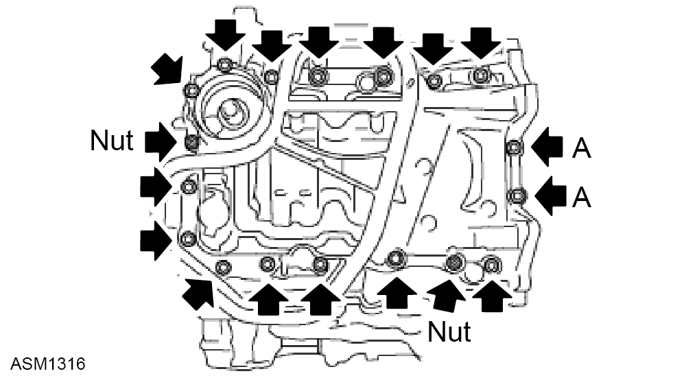

Oil Sump - Upper - V6
Print
Operation Code: 40.03.04-02
Removal
- Remove transmission assembly. Refer to procedure.
- Remove oil pick up. Refer to procedure.
- Remove oil filter. Refer to procedure.

- Remove bolts (x16) securing upper oil sump to engine block.
Torque 21 Nm.
Bolt A. Torque 10 Nm.
- Remove nuts (x2) securing upper oil sump to engine block.
Torque 21 Nm. Nut A.
Torque 10 Nm.
- Remove upper oil sump.
- Remove and discard O rings (x2) from timing chain cover.
Installation
- Installation is the reverse of removal procedure except for the following:
- Clean mating surfaces.
- Renew discarded O rings.